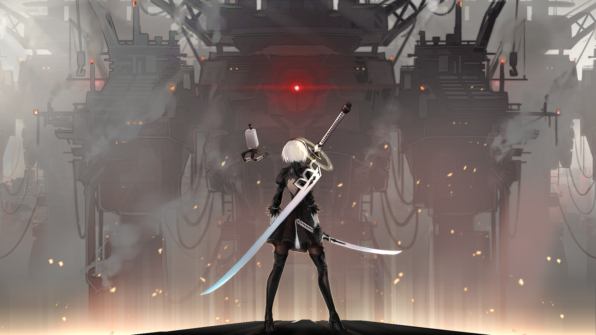
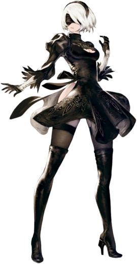

Qu'est-ce-que Nier:Automata
Nier : Automata est un jeu qui se mérite. Après un démarrage séduisant et un affrontement tonitruant contre une immense plateforme-robotique, le rythme se calme très vite pour virer à l’exploration intime. Dans une ère de jeu modeste, qui se veut monde ouvert tout en restant assez restreinte, le joueur est invité à faire progresser deux androïdes : 2B, dotée d’une silhouette féminine, et 9S, au physique d’adolescent. Ces deux « machines » participent à un plan de reconquête de la Terre, dont les humains ont perdu le contrôle. Il y a des siècles, des aliens ont attaqué, aidés de nombreux robots rudimentaires qui peuplent désormais notre monde.
Au milieu d’immeubles abandonnés, dans un désert, une forêt ou un parc d’attraction, le duo d’androïdes va d’objectifs en objectifs, traînant son spleen et ses sabres. Au fur et à mesure de quêtes annexes qui donnent la part belle à des allers et retours parfois fastidieux, et surtout d’une trame principale plus agréable, 2B et 9S sont peu à peu contraints de remettre en cause leur vision manichéenne des antagonismes en cours. Tout le charme du jeu scénarisé par Yoko Taro réside dans cette capacité des androïdes à réfléchir par eux-mêmes, à s’interroger sur le sens de la vie, à être émus et à émouvoir le joueur. Quoi de plus surprenant qu’une machine qui s’énerve, s’amuse et transgresse son propre programme informatique ? Au beau milieu d’une question largement traitée par la science-fiction, Nier : Automata trouve sa voix propre.
